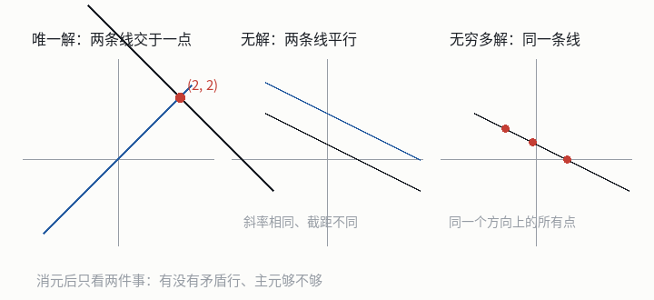

高斯消元与解的结构
本节目标：能手写消元把线性方程组解出来，并判断解的存在性与自由度。
一行报错引出的问题
你在写一个小脚本，要把一次实验里五组测量拟合成三个参数的模型，于是有了三个未知量、五个方程的超定方程组。标准库里没有 solve，你打算自己消元；写到一半，屏幕上跳出一句：
ValueError: 这个方程组没有唯一解：要么无解，要么有无穷多解这句报错就是本课要回答的问题：只看消元的结果，怎么知道它属于哪一种？
术语：消元的来历
「高斯消元」这个名字挂在高斯名下，但方法本身比他早两千年：《九章算术》的方程章里就有「遍乘直除」的算法，用行与行相减来解出未知量；欧洲在 17 世纪由莱布尼茨、18 世纪由高斯在测量数据的最小二乘计算中系统使用，19 世纪的教科书把它整理成今天的样子，于是用了高斯的名字。
「消元」二字说的是动作：把未知量一个一个消掉，直到某一行只剩一个未知量。手的动作很简单—— 方程两边同乘一个非零数、两个方程相减、交换两个方程的位置，这三件事都不会改变方程组的解集。把未知量的名字藏起来，只抄系数，就得到增广矩阵（augmented matrix）：系数与等号右边的常数并排写在同一个数表里，消元时两边一起变，不用每步重抄。
手写一遍消元
拿上面这个方程组走一遍，每一步只做一件事。先交换第 1、3 行，让首位变成 1，再把第一列消干净：
接着处理第二列：把第 2 行化成 1，第 3 行除以 5，再用它们把这一列的 3、1.5 消掉，第三行就只剩一个未知量了。
最后把上面两行里的 z 也消掉，就得到最简行阶梯形（reduced row echelon form，缩写 rref）：
它有两个特征：每个主元都是 1，且主元所在列的其他位置全是 0。答案直接读出来，一行一个：x = 3， y = 1，z = 2。代回原来的方程组验证：6 + 1 + 2 = 9、3 + 3 + 4 = 10、3 + 1 - 2 = 2，与右端项一致。
三种解：判据与自由变量
把增广矩阵化成行阶梯形之后，只看两件事：有没有矛盾行、主元够不够。两种判据都要在「没有矛盾行」的前提下使用，所以顺序是先看矛盾行，再看主元个数。

落到矩阵上，判据是这样两条：出现 \left[\begin{array}{cccc|c} 0 & 0 & \dots & 0 & \text{非零} \end{array}\right] 这样的行（也就是 0 = \text{非零}）就是无解；没有矛盾行时，主元个数等于未知量个数就是唯一解，少于未知量个数就是无穷多解，差几个主元就有几个自由变量。
没有主元的那些未知量叫自由变量（free variable）：它可以任取一个值，其余未知量随之被定下来。自由变量的个数就是解集的维数——一个自由变量，解集是一条直线；两个自由变量，解集是一个平面。
| 情形 | 行阶梯形的特征 | 主元个数 | 自由变量个数 | 解集 |
|---|---|---|---|---|
| 唯一解 | 没有矛盾行 | 等于未知量个数 | 0 | 一个点 |
| 无穷多解 | 没有矛盾行 | 少于未知量个数 | 至少 1 个 | 直线、平面或更高维 |
| 无解 | 有 \left[\begin{array}{ccc|c} 0 & \dots & 0 & \text{非零} \end{array}\right] 行 | 与解无关 | 与解无关 | 空集 |
拿两个例子对照。无解的方程组：
消元后第二行变成 \left[\begin{array}{cc|c} 0 & 0 & 1 \end{array}\right]，即 0 = 1，无解。把右端项换成 (1, 2)，第二行变成全零，只剩一个主元而未知量有两个：y 是自由变量，解是 (1 - 2t, t)，一条直线上的无穷多个点。
\left[\begin{array}{cc|c} 0 & 0 & 0 \end{array}\right] 表示「这一行没提供新信息」，它在说这个方程是前几个方程的线性组合，解集一点没变。只有右边也非零时才矛盾。看到一整行零就写「无解」，是最常见的误判。
解的结构：特解加零空间
无穷多解的情形值得多看一步。x + 2y = 1 的解可以写成
右边第一项是取 t = 0 得到的一个特解；第二项是齐次方程 x + 2y = 0 的全部解，也就是第 2 课讲过的零空间。这不是巧合：若 x_p 是 Ax = b 的一个解，v 是 Av = 0 的任意解，那么 A(x_p + v) = Ax_p + Av = b + 0 = b，所以 x_p + v 也是解；反过来两个解的差必然落在零空间里。
于是解集永远长这个样子：
这也是「自由变量的个数 = 零空间维数」的来源：两者都是解集维数，只是一个从方程组看、一个从变换看。
用 Python 算一遍
下面这段把消元写成代码，用的还是第 1 课的逐行列表运算。它只做一件事：把增广矩阵化成最简行阶梯形。
def rref(M):
"""原地把 M 化成最简行阶梯形（主元为 1，主元列其余位置为 0）。"""
M = [row[:] for row in M] # 拷贝一份，别改到调用方的矩阵
rows, cols, r = len(M), len(M[0]) - 1, 0 # r 是当前要处理的行的下标
for c in range(cols): # 逐列找主元
p = next((i for i in range(r, rows) if M[i][c] != 0), None)
if p is None: # 这一列没有可用主元
continue
M[r], M[p] = M[p], M[r] # 把主元换到当前行
pivot = M[r][c]
M[r] = [v / pivot for v in M[r]] # 主元化成 1
for i in range(rows): # 其余各行消掉这一列
if i != r and M[i][c] != 0:
f = M[i][c]
M[i] = [a - f * b for a, b in zip(M[i], M[r])]
r += 1
return MA = [[2, 1, 1], [1, 3, 2], [1, 1, -1]]
b = [9, 10, 2]
aug = [row + [rhs] for row, rhs in zip(A, b)] # 拼成增广矩阵
for row in rref(aug):
print(row) # [1,0,0,3] / [0,1,0,1] / [0,0,1,2] → x=3, y=1, z=2三行打印出来分别是 [1, 0, 0, 3]、[0, 1, 0, 1]、[0, 0, 1, 2]，与手算的结果一致。这里用的是浮点除法，结果看着干净是因为这些数恰好能整除；把矩阵里的数换成 fractions.Fraction 再跑，遇到 1/3 这类结果时就不会有误差。
把上面两段存成 rref_demo.py，然后分别跑下面三个方程组（只改 A 与 b）：
① 唯一解： A = [[2, 1, 1], [1, 3, 2], [1, 1, -1]] b = [9, 10, 2]
② 无解： A = [[1, 2], [2, 4]] b = [1, 3]
③ 无穷多解： A = [[1, 2], [2, 4]] b = [1, 2]每个都先手写出「有没有矛盾行、主元几个、自由变量几个」，再用代码验证。第 ③ 个的最简行阶梯形第二行会变成 [0, 0, 0]，主元只剩一个——这就是自由变量 y 的来历。
上面这段代码只负责化简，还不会判断解的结构，也还不会把解回代出来。剩下的活分给它：
完整任务、环境与跑法见 lab 说明，里面四个函数要你亲手实现：
rref(A)：化成最简行阶梯形；pivot_columns(A)与rank(A)：给出主元所在列、数出秩；solve(A, b)：用化简结果判断「唯一解 / 无解 / 无穷多解」，并给出自由变量的个数。
cd ../lab/0003-system-elimination
python3 -m unittest -v # 现在是红的：20 条报 NotImplementedError，那是待办清单卡住时按这个顺序来：先读断言的报错原文 → 再看函数上方注释里的边界 → 还不行把报错贴回会话。我不直接给答案，会先问你哪一行不对。参考解在 ../lab/solutions/0003-system-elimination/，做完再对照。
这台机器与后面三课
消元是本课程第一个成型的工具：它把「有没有解、有几个解」变成可以机械执行、也可以写成代码的判定过程。它的三个副产品后面还要用：主元位置决定哪些变量自由（第 4 课的基就是主元列给出的）；秩是主元的个数；零空间是所有 Av = 0 的解（第 5 课求特征向量时，解的就是 (A - \lambda I)v = 0 这个齐次方程组）。